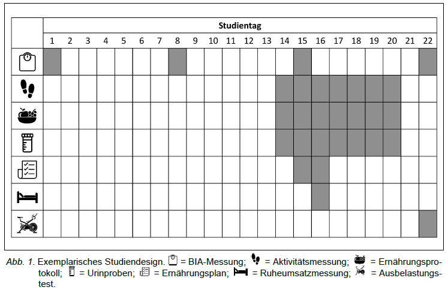
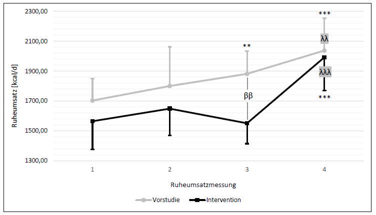
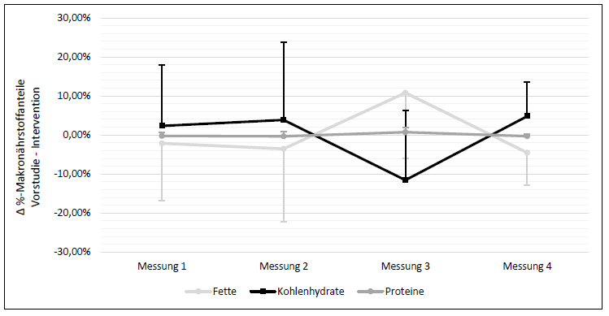

Diet plays a central role in the prevention and treatment of overweight and obesity. Dietary interventions use various methods to bring about a reduction in body weight. One possibility is the restriction of daily food intake to fixed periods of time, which is called time-restricted feeding (TRF) and belongs to the method of intermittent fasting. Some studies on TRF show positive effects on body weight and body composition. However, the underlying metabolic processes and a possible influence on athletic performance have not yet been sufficiently analysed. The present study therefore investigates the influence of a 20/4 diet, a subform of TRF, on internal metabolic processes and their potential alteration as well as the effects on athletic performance.
Ten women (BMI: 23.6 ± 1.8) aged 24 ± 3 years took part in the studies. These took place over a period of one month both during a pre-study with the usual dietary behaviour and during the intervention with a changed diet. Resting metabolic rate measurements with indirect calorimetry and exercise tests to determine VO2max on a bicycle ergometer as well as analyses of body weight and body composition using bio-impedance analysis were carried out. In addition, evaluations of activity behaviour, food intake and urine were taken into account
Study design:

My tasks: (Tools)
During the intervention, a highly significant reduction in body weight of 1.4 ± 1.3 kg (p = 0.008) was observed. The body turnover of the intervention measurements was 8.2 ± 13.2 % (p = 0.014) lower than that of the pre-study at all time points and on average. Furthermore, a deviation in fat and carbohydrate metabolism from the pre-study was detected, particularly at the third measurement time point (afternoon) of the resting metabolic rate measurement. The results of the exercise test showed a highly significant decrease in exercise duration of 54 ± 50 seconds (p = 0.008) and a significant decrease in maximal oxygen uptake of 6.3 ± 6.4 % (p = 0.017).
Course of resting metabolic rate in kcal/d during one day in comparison of pre-study and intervention:

Mean difference and SD of relative macronutrient proportions in total metabolism between pre-study and intervention:

The present study was able to confirm the weight loss through the 20/4 fasting form that had already been observed in previous studies. An altered fat and carbohydrate metabolism is mainly indicated in the afternoon measurement, but does not influence the daily average of the proportions of metabolised macromolecules. The observed weight loss can be attributed primarily to the simultaneous 271 ± 360 kcal/d reduction in energy intake (p = 0.054) (r = 0.77), which is not consistent with the findings of existing studies.